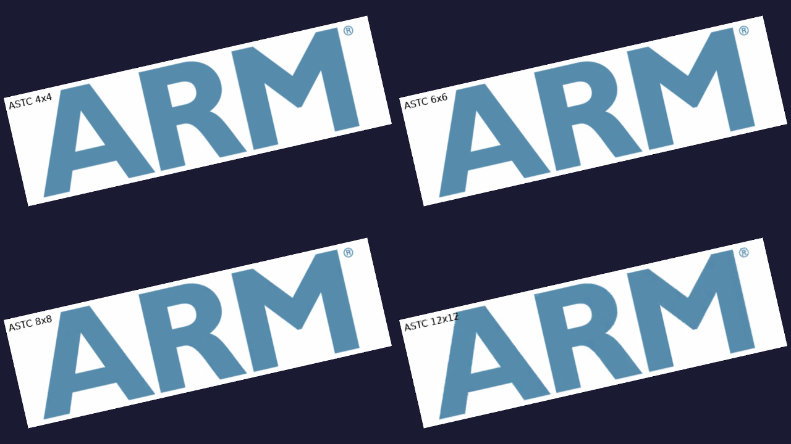

Introduces how to use the ASTC compression standard for textures in Vulkan.

ASTC compressed at various bit-rates
- Note
- This sample will only run as intended on GPUs which support ASTC. For other GPUs, a fallback PNG will be displayed instead.
Introduction
ASTC is a texture compression standard which currently represents the state of the art in GPU texture compression. "Adaptive" and "Scalable" refer to important features:
- Supports both LDR/HDR textures, although only LDR textures are part of core Vulkan.
- Supports both 2D and 3D textures, although only 2D textures are part of core Vulkan.
- Support for any number of color channels and uncorrelated channels for special purpose texture data.
- Supports a wide range of quality settings ranging from 8bpp all the way down to less than 1bpp for 2D images in fine grained steps.
- In LDR mode, UNORM and SRGB are supported.
For more information specifically about ASTC, please visit: ASTC Overview
Texture compression is vital in order to reduce the size of games and other applications which rely heavily on textures. An other aspect of texture compression is reducing bandwidth on the GPU which can improve performance and significantly reduce power consumption.
For this sample we will demonstrate LDR ASTC at different quality settings from highest quality (4x4 blocks) down to lowest (12x12 blocks).
Encoding images to ASTC
ASTC is an open standard and anyone can freely implement tools which decode and encode ASTC. For this sample, we will use the reference ASTC compressor from ARM which can be found on GitHub.
astcenc -c texture.png texture.astc 4x4 -thorough
The ASTC payload format generated by astcenc consists of a 16 byte header, followed by the raw ASTC blocks.
struct ASTCHeader
{
uint8_t magic[4];
uint8_t blockdimX;
uint8_t blockdimY;
uint8_t blockdimZ;
uint8_t xsize[3];
uint8_t ysize[3];
uint8_t zsize[3];
};
static_assert(sizeof(ASTCHeader) == 16, "Packed ASTC header struct is not 16 bytes.");
#define ASTC_MAGIC 0x5CA1AB13
Detecting ASTC support
ASTC is a core feature in Vulkan, but supporting the format is optional. To detect if ASTC is supported on your GPU, you can use
VkFormatProperties properties;
vkGetPhysicalDeviceFormatProperties(pContext->getPhysicalDevice(), VK_FORMAT_ASTC_4x4_UNORM_BLOCK, &properties);
bool supportsASTC = (properties.optimalTilingFeatures & VK_FORMAT_FEATURE_SAMPLED_IMAGE_BIT) != 0;
Uploading ASTC textures to GPU
Uploading ASTC textures is no different from uploading other images. Just like in the Rotating Texture sample we will use vkCmdCopyBufferToImage to copy our ASTC payload into the texture.
To load the image, we'll use the convenience function
if (supportsASTC)
{
LOGI("Device supports ASTC, loading ASTC texture!\n");
if (FAILED(loadASTCTextureFromAsset(pPath, &buffer, &width, &height, &format)))
{
LOGE("Failed to load texture from asset.\n");
abort();
}
}
If ASTC is not supported, we just load the fallback PNG texture.
- Note
- For PNG input images, astcenc Y-flips the input texture, so we do the same for the fallback PNG texture. The vertex shader this time around applies the Y flip to get back to non-flipped input.
The only real difference between uploading compressed textures and uncompressed textures is that ASTC textures use a different format, VK_FORMAT_ASTC_*. The entry points for creating textures and uploading them are the same.
VkBufferImageCopy region = {};
region.bufferOffset = 0;
region.bufferRowLength = 0;
region.imageSubresource.aspectMask = VK_IMAGE_ASPECT_COLOR_BIT;
region.imageSubresource.layerCount = 1;
region.imageExtent.width = width;
region.imageExtent.height = height;
region.imageExtent.depth = 1;
vkCmdCopyBufferToImage(cmd, stagingBuffer.buffer, image, VK_IMAGE_LAYOUT_TRANSFER_DST_OPTIMAL, 1, ®ion);
Links
ASTC Overview
ASTC Encoder - Github